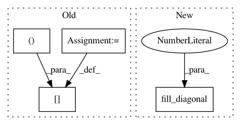

114c77e248d76291559b647d08e5dde10bcdbdde,describe/descriptors/sinematrix.py,SineMatrix,sine_matrix,#SineMatrix#Any#,47
Before Change
// Cell and inverse cell
B = system.lattice._matrix
B_inv = system.lattice.inv_matrix
// Difference vectors in tensor 3D-tensor-form
diff_tensor = system.displacement_tensor
// Calculate phi
arg_to_sin = np.pi * np.dot(diff_tensor, B_inv)
phi = np.linalg.norm(np.dot(np.sin(arg_to_sin)**2, B), axis=2)
with np.errstate(divide="ignore"):
phi = np.reciprocal(phi)
// Calculate Z_i*Z_j
q = system.charges
qiqj = q[None, :]*q[:, None]
// Multiply by charges
smat = qiqj*phi
// Set diagonal
np.fill_diagonal(smat, 0.5 * q ** 2.4)
// Pad with zeros
zeros = np.zeros((self.n_atoms_max, self.n_atoms_max))
zeros[:smat.shape[0], :smat.shape[1]] = smat
smat = zeros
return smat
After Change
// Calculate Z_i*Z_j
q = system.get_initial_charges()
qiqj = q[None, :]*q[:, None]
np.fill_diagonal(phi, 0)
// Multiply by charges
smat = qiqj*phi
In pattern: SUPERPATTERN
Frequency: 5
Non-data size: 4
Instances
Project Name: SINGROUP/dscribe
Commit Name: 114c77e248d76291559b647d08e5dde10bcdbdde
Time: 2017-08-06
Author: lauri.himanen@aalto.fi
File Name: describe/descriptors/sinematrix.py
Class Name: SineMatrix
Method Name: sine_matrix
Project Name: nilearn/nilearn
Commit Name: 99fe730f9963f87aaf5d614bb74d60fc3d8e8173
Time: 2015-11-08
Author: arokem@gmail.com
File Name: examples/connectivity/plot_probabilistic_atlas_extraction.py
Class Name:
Method Name:
Project Name: nilearn/nilearn
Commit Name: 99fe730f9963f87aaf5d614bb74d60fc3d8e8173
Time: 2015-11-08
Author: arokem@gmail.com
File Name: examples/connectivity/plot_signal_extraction.py
Class Name:
Method Name:
Project Name: SINGROUP/dscribe
Commit Name: 114c77e248d76291559b647d08e5dde10bcdbdde
Time: 2017-08-06
Author: lauri.himanen@aalto.fi
File Name: describe/descriptors/coulombmatrix.py
Class Name: CoulombMatrix
Method Name: coulomb_matrix
Project Name: nilearn/nilearn
Commit Name: d5af4c37893a7ead45a966eb89a3e4018a97e556
Time: 2015-10-06
Author: sb238920@is223297.intra.cea.fr
File Name: nilearn/connectivity/connectivity_matrices.py
Class Name:
Method Name: sym_to_vec